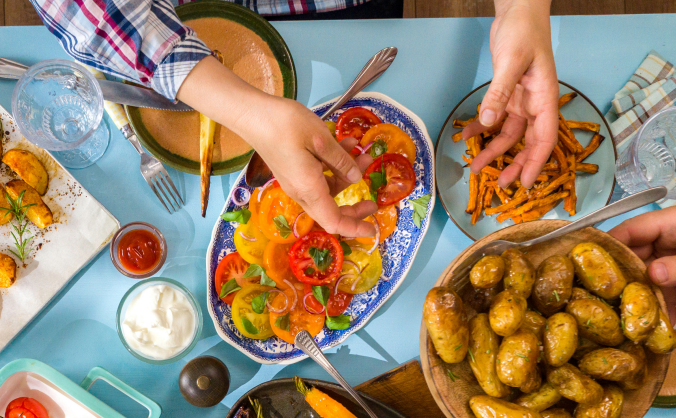

Why cook

One of the most important reasons is that it can greatly improve your overall health. Cooking your own meals allows you to control the ingredients and make healthier choices, more fresh fruits and vegetables. Additionally, cooking at home can be more cost-effective than eating out or relying on pre-packaged meals.
More Information
